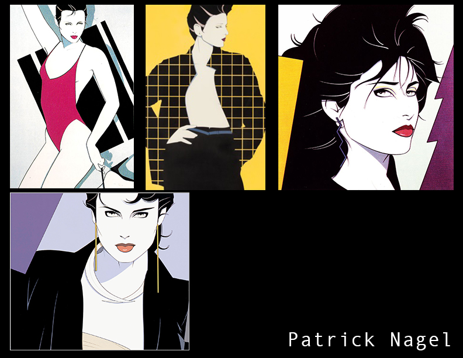

Inspiration
Sometimes when I'm feeling overwhelmed I'll close my eyes and doodle. I'll open my eyes and put together shapes and forms. Life can be pretty overwhelming but sometimes finding the simplicity in the chaos can be beautiful.
Patrick Nagel is an inspiring artist that reminds me to simplify. Using bold shapes and contrasting colors, with simple contour lines.
After taking a break from school and slowly easing my way back in I was able to find myself. Part of finding your home is finding who you are. Taking classes in Graphic Design helped me find my inspiration. When I was taking Illustrator, I was able to put a name to a face, Drew Struzan. I love all the movies that he created film posters for, Indiana Jones, Back to the Future, Big Trouble Little China.
"My gift is to share my life by allowing others to see into my heart and spirit through such tangible, comprehensible and familiar means. The paint is part of the expression."
-Drew Struzan